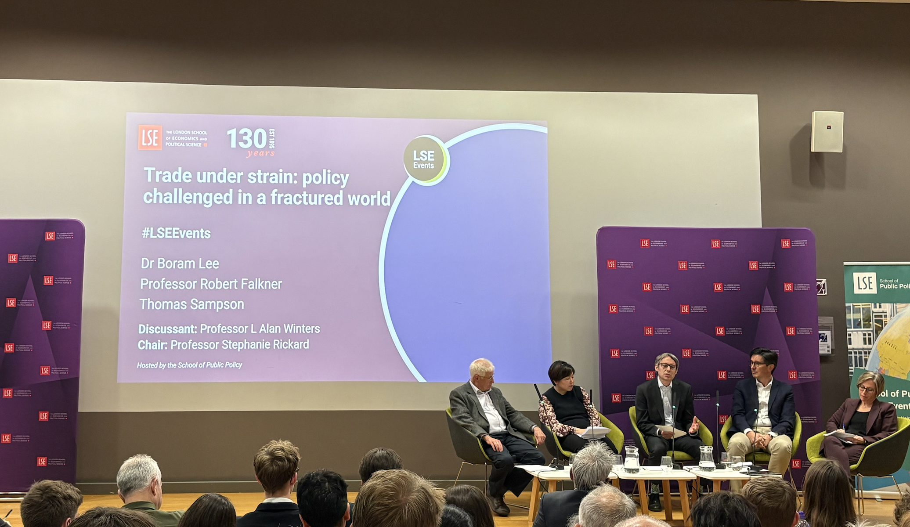

There is something uniquely satisfying about sitting in a lecture hall on campus and listening to British and European academics dissect America. The distance does something to the analysis — America becomes the object of study rather than the water you swim in, and that defamiliarisation makes even familiar arguments land differently. The LSE panel on trade policy in a fractured world offered exactly this: a brisk, sharp, occasionally repetitive tour through the unravelling of the post-war international economic order, with the United States firmly under the microscope.
The panel brought together three disciplinary perspectives on the current trade crisis, and taken together they offered a genuinely useful map of how the international order is fracturing.

The panel was organised around the launch of a special issue of the LSE Public Policy Review on trade policy, and it was the discussant, L. Alan Winters, who drew out its most intellectually satisfying thread — foregrounding Jeffry Frieden's contribution to the journal. Frieden's regime theory argument — that international orders collapse when anchor powers stop behaving as others expect — grounds what feels like chaos in a recognisable historical pattern. The parallels to Nixon's abandonment of Bretton Woods and the Bundesbank's destruction of the EMS are illuminating: in both cases, domestic political pressures in the anchor country drove behaviour that broke the system. Winters' decision to centre this framework was apt, because it forces the question not just of what is happening,but why regimes ever held together in the first place — and the answer, centred on expectations and mutual constraint, is more interesting than the usual story about rules and institutions. Notably, it was also Winters who introduced the counterpoint I initially heard Adam Tooze bring up at the Institute of International Finance conference in April — that Trump did not move the people, the people were already ready for him. Making Robert Falkner’s centrepiece argument that Trump is the “Great Tariff Man” of history feel rather less satisfying than it is clearly meant to.
Robert Falkner, approaching the question from an international relations perspective, offers a clean three-level framework for understanding the tariff escalation: the systemic rivalry between the US and China, domestic anti-globalisation sentiment, and individual leadership. The framework is useful. But his conclusion — that Trump's personal ideological commitment to tariffs explains the scale of what we are seeing — sits awkwardly next to the point Winters [and Tooze previously] raised. If the conditions were already there, Trump didn't make history. He just showed up for it.
This is where Boram Lee's work becomes the most interesting contribution to the debate, even if it wasn't framed that way on the panel. Lee studies issue linkage: the strategy of attaching non-trade issues like labour or environmental standards to trade agreements to build legislative support for them. Her argument is that it only works when swing voters exist, because legislators only change their position on trade when their constituents can credibly reward or punish them for it. In a polarised electorate where people vote along party lines regardless of policy, that mechanism breaks down. The NAFTA case makes the point well — even in 1993, the environmental side deal wasn't enough on its own. The Clinton administration had to spend aggressively on pork barrel projects just to get the votes. If that's what it took then, the picture now is bleaker. What Lee is really showing is that the conditions for trade liberalisation didn't collapse because of Trump. They had already collapsed. He inherited the rubble.